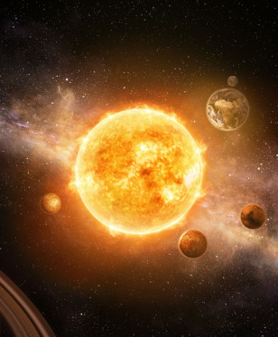

The Basics
I'm sure you already have a very primitive, underdeveloped, pitiful understanding of gravity, at the very least. What goes up must come down, am I right? Well, there's a lot more to it than that. And me, I basically invented gravity (search it up, I made that word myself).
Well, according to my law of universal gravitation, EVERYTHING has a gravitational force. Your dog, your Grandma, your special rock; they're all like tiny planets. That's the thing though, they're so small that their gravitational pull is practically non-existent. It all has to do with mass and distance. So, why is it that bigger things have stronger gravitational forces? And what even is a force, anyway? That's what the papers are for! There's even some crazy cool stuff, such as how the planets of our solar system orbit our giant sun!

I won't spoil my research, but I'll give you a lil' taste: To put it simply, gravity is a force, and on Earth, it's constantly pulling us down towards its core. The Earth is actually attracting every particle in the universe, to varying degrees. Everyone tunes it out, but there's always that downwards force; it's why your back aches after standing a while, right?